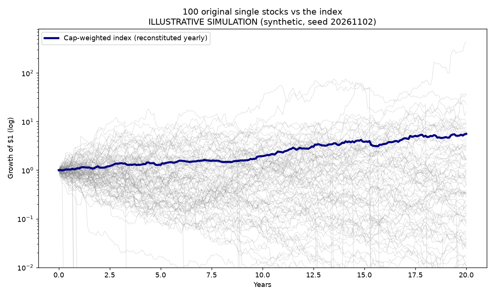
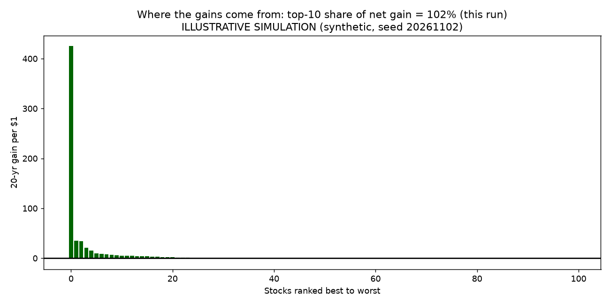
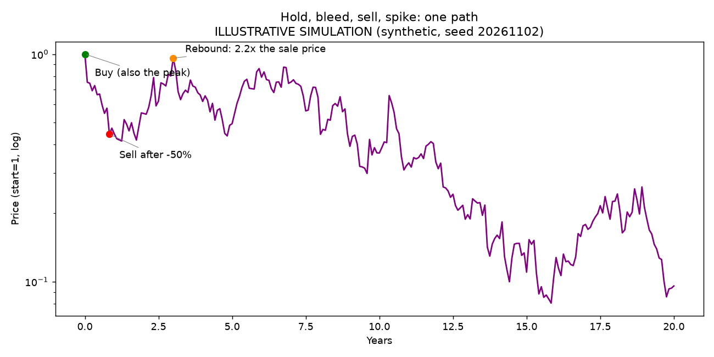

Our view (opinion)
The Nasdaq-100 is less a portfolio of clever picks and more a bouncer with a tape measure. Every December it lets in companies that got big, shows the door to the ones that shrank, and lets a handful of giant compounders do almost all the heavy lifting. Owning the index (the QQQ fund tracks it) means you automatically own the next monster winner once it is large enough to notice, and you never have to work up the nerve to hold it through a 50% drop.
Picking single stocks is a different sport. Most stocks, history says, are a long walk to nowhere. A few are rocket ships. The hard part is not spotting the rocket. It is still being on board when it finally lifts off.
The historical rhyme
In 2018 finance professor Hendrik Bessembinder looked at every US common stock in the CRSP database from 1926 to 2016, all 25,332 of them, and asked a rude question: did they beat one-month Treasury bills? Mostly, no. His paper (Do Stocks Outperform Treasury Bills?, Journal of Financial Economics, 2018) found:
- Just 1,092 companies, about 4.3% of the total, account for all of the stock market's net wealth creation over T-bills. The other 96% or so, taken together, roughly matched T-bills.
- The top 5 companies alone account for 10.07% of that wealth creation. The top 50 account for 39.29%. Just 90 companies, 0.36% of the list, account for more than half.
- About 58% of stocks failed to beat T-bills over their lifetimes (ASU W. P. Carey summary, Sep 17, 2018).
So the stock market is a lottery where the house is generous overall, but only because a tiny number of tickets pay off like crazy. If you hold five stocks, the odds are good that none of them is one of the 90.
Now look at how the Nasdaq-100 chooses its members. Per the official methodology, it holds 100 of the largest non-financial companies listed on Nasdaq, weighted by market value with caps so one giant cannot swallow the whole thing. Each December it ranks everyone by size, takes the top 75, keeps existing members still in the top 100, gives members ranked 101 to 125 a grace period if they were top-100 last time, and fills any gaps with newcomers. Quarterly reviews can also kick out members that fall below 125th, and a "Fast Entry" rule lets a very large newcomer in early.
That is momentum with a filing cabinet. Nasdaq says that from 2021 to 2025 an average of 91.6% of members were picked in the first two steps, purely on size (Nasdaq, 2025 reconstitution highlights). In the December 2025 shuffle, six companies came in, and Nasdaq notes each had gained at least 50% that year. Six went out, including The Trade Desk and Lululemon, down 68% and 46% in 2025. Nobody had to feel sad about it. The rule just did its job.
A toy model of the filter
To see why the filter matters, we built an illustrative simulation. It is synthetic and not calibrated to real stocks, so treat every number below as a cartoon of the idea, not a forecast. The setup: 300 made-up companies, 100 of them in a cap-weighted index rebuilt once a year with the same 75 / 100 / 125 rules, 20 years of monthly prices, run 500 times. The fake stocks are wild on purpose: big swings (50% a year), fat tails, a slight downward drift on average, and a 1% yearly chance of going to zero. Dead companies get replaced by small newcomers that sometimes grow up.
| Illustrative simulation, 20 years | Result |
|---|---|
| Index, growth of $1 (median / average) | 15.1x / 62.7x |
| One random stock, bought and held (median / average) | 0.18x / 18.7x |
| Single stocks ending below where they started | 70.6% |
| Original index members that beat the index | 9.4% on average |
| Share of total net gain from the top 5 names (median) | 89% |
| Share of total net gain from the top 10 names (median) | 99% |
Read the second row twice. The typical single stock turned $1 into 18 cents, while the average turned it into $18.70. That gap is the whole story: a few freak winners drag the average up while the typical stock quietly sinks. It is the same shape Bessembinder found in real data, just turned up to eleven by our dramatic settings.

Source: our illustrative simulation (synthetic data, fixed random seed). Not market data. Click the chart to open it full size.

Source: our illustrative simulation (synthetic data, fixed random seed). Not market data.
Hold, bleed, sell, watch it spike
Here is the very human way to own a single stock. Buy it. Watch it drop. Hold on bravely. Watch it drop more. Finally sell, just to make the pain go away. Then watch it rally without you. In the simulation we tested two common pain thresholds: sell once a stock falls 30% from its peak, or 50%.
| Illustrative simulation | Sell after a 30% drop | Sell after a 50% drop |
|---|---|---|
| How often the sell rule fired | 99% of runs | 96% of runs |
| Stock later traded above the sale price | 93% of sales | 92% of sales |
| Growth of $1 (median / average) | 0.79x / 1.39x | 0.64x / 2.82x |
With swings this big, the sell rule goes off almost every time, and more than nine times out of ten the stock later trades above where you bailed. Selling does protect you from the true zeros (the median is better than holding), but it also guarantees you miss most of the rocket ships. The index never panics. It simply keeps whatever is big.

Source: our illustrative simulation (synthetic data, fixed random seed). Not market data.
Upside versus downside
Upside. You own the filter, so you never have to guess which company becomes the next giant. When it gets big enough, it shows up in your portfolio on its own, and the losers get escorted out without you having to admit anything. History (Bessembinder) says the whole market's gains come from a tiny group of winners, and a size-ranked index is built to end up holding them.
Downside. The filter only notices a company after it has already grown, and it drops companies after they have already fallen. That is buying high and selling low on purpose, just in a way that has tended to work because the winners keep winning. It is also concentrated: a few mega-caps drive the result in both directions, and this index has had very large drawdowns in the past. Our simulation numbers come from settings we chose to make the point loudly; real markets are calmer and messier.
Our read: if you cannot reliably find the 4% in advance (and almost nobody can), owning the bouncer is a lot easier on the nerves than owning a handful of guests.